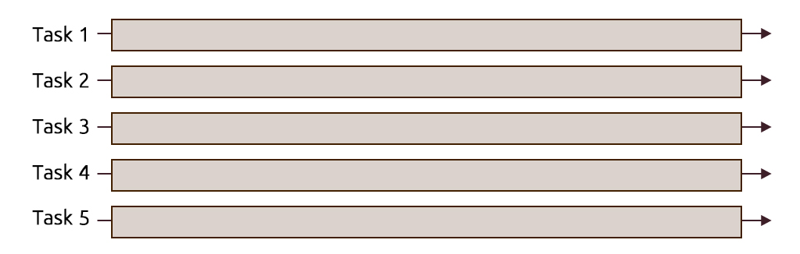
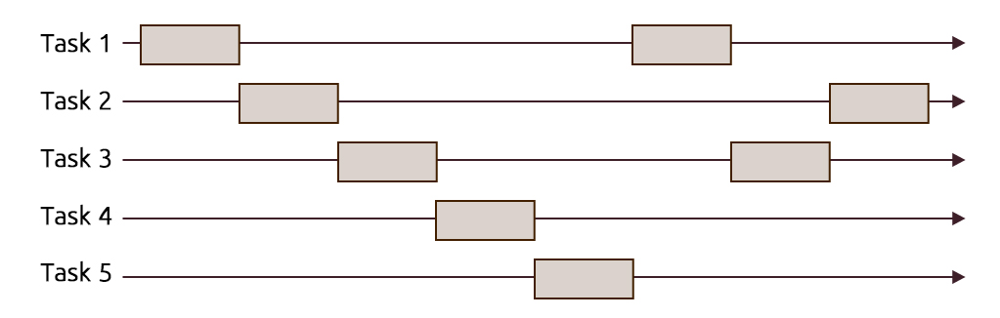
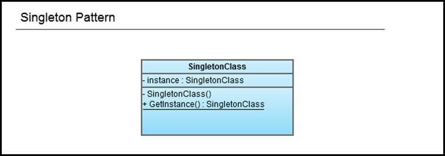

Move semantics and rvalue references in C++11
July 11, 2013
Questions we want to answer in this post
- Why do we need move semantics?
- What's the deal with rvalues, lvalues, and their references?
- How to make use of the move semantics?
- How do we force a move?
- What are other uses for rvalue references?
Concurrency in C++ [Prologue]
June 11, 2013
First things first
The purpose of these posts is to explore the newly release thread-aware memory model supported by the new C++11 standard. But before we get our hacking on, we'll need to get some terminology out of our way. These terminology can be divided into a couple of questions that we'll answer in this post
- What is the difference between concurrency and parallelism?
- What are threads? And what is the difference between threads and processes?
What is the difference between concurrency and parallelism?
Parallelism: When we execute several computations in parallel, e.g. multiple tasks are executing code simultaneously (at the same instant) on multi-processor/multi-core/distributed systems with the goal of hopefully running faster than it would on a single processor.

Concurrency: Is a more generalized term than parallelism; where multiple tasks are making progress in a specific interval. Meaning that their executions overlap, but that doesn't necessarily mean that they are executing at the same instant.

A great importance of concurrency is its role in making computer software more usable, example when running software that uses an MDI (Multiple Document Interface) or a TDI (Tabbed Document Interface) like a word processor or a browser on a single-core processor, you get to operate on several documents and interact properly with the GUI without any lagging or sluggishness. Or having a program that connects to a database, retrieves data from it while still being able to handle the user's interactions. This can't be achieved if each task gets to complete all of its work before relinquishing the processor control. One way to achieve this scenarios would require using time-slicing, where the processor's time is divided into slices to be shared between a number of tasks and each task runs until its time is over then an interrupt is made to switch (context switch) to another task, giving the illusion that tasks are running in parallel. This mode of operation can also be referred to as preemptive multitasking. You could also check Rob Pike's demo about the difference between Concurrency and Parallelism (slide 14:30)
Having established the difference between concurrency and parallelism we can now move on to another concept which is threads.
What are threads?
And what is the difference between threads and processes?
Before we answer this question, we'll try to use an analogy that might make things easier to grasp.
A process is like a house
A house is really a container, with certain attributes (such as the amount of floor space, the number of bedrooms, and so on).
If you look at it that way, the house really doesn't actively do anything on its own -- it's a passive object. This is effectively what a process is. We'll explore this shortly.
Threads are like the occupants
The people living in the house are the active objects -- they're the ones using the various rooms, watching TV, cooking, taking showers, and so on. We'll soon see that's how threads behave.
You could be living by yourself (Single-threaded)
If you've ever lived on your own, then you know what this is like -- you know that you can do anything you want in the house at any time, because there's nobody else in the house. If you want to turn on the stereo, use the wash-room, have dinner -- whatever -- you just go ahead and do it.
You can have some company with you (Multi-threaded)
Things change dramatically when you add another person into the house. Let's say you get married, so now you have a spouse living there too. You can't just march into the wash-room at any given point; you need to check first to make sure your spouse isn't in there!
If you have two responsible adults living in a house, generally you can be reasonably lax about "security" -- you know that the other adult will respect your space, won't try to set the kitchen on fire (deliberately!), and so on.
Now, throw a few kids into the mix and suddenly things get a lot more interesting.
Threads represent the smallest sequence of execution in a program that can be managed independently by the OS, meaning that in terms of the time-slicing approach we've referred to earlier, the slice can't be assigned to anything more granular than threads.
Threads hold tasks like loading a document and updating the UI which are interleaved by the scheduler to run concurrently.
After examining the previous analogy we can say that:
- A single instance of a program constitutes a running process which in turn may contain a single main thread or multiple running threads.
- Threads of the same process run in a shared memory space, while each process on the other hand have its own memory space.
Based on this mode of operation, there are some consequences:
- Threads are more easy to instantiate than processes because they don't require the allocation of a new address space like processes.
- Because processes are independent of each other, they require some sort of channel in order to communicate with each other e.g. message passing used in MPI
- Threads on the other hand don't suffer from lack of communication because they share the same memory, consequently synchronization between the threads is required to make sure that one thread won't tamper with a shared resource e.g. a data structure (the wash-room from our analogy) while another thread is operating on it. We'll talk later about the methods for accomplishing synchronization between threads.
When do we divide tasks into threads and when do we spawn several processes to run them is mainly up to the programmer to decide how his software is going to behave. To illustrate, we'll talk about a ubiquitous tool in our present; browsers. A few years ago when we wanted to operate on several tabs on a browser that supported TDI, the application's process spawned a separate child thread for each tab. Around 2008, Chromium started using a different model "multi-process architecture" where separate processes were spawned for managing tabs, web apps and plug-ins.
The reasons behind the approach that was taken in Chromium in putting web apps and plug-ins in separate processes from the browser itself can be found in this post explaining the multi-process architecture, they could be summarised into:
- Prevent having the whole browser crash if one of the tabs become unresponsive (e.g. rendering engine crashes) this won’t affect the browser or other running web apps.
- To take advantage of the modern computer architectures by parallelizing the execution of the rendering engines for each tab along with the rest of web apps and extensions.
- Provide a sandbox for tabs, web apps, etc. to limit the damage if an exploit occurs.
Soon enough, other flagship browsers have started to follow this model including Mozilla's Firefox in a project named Electrolysis.
In the next post, we'll start our journey to explore the concurrency realm in C++11 from managing threads, synchronizing operations between threads and protecting shared data.
Further reading
Singleton Pattern
August 01, 2011
Pattern Name
Singleton Pattern
Classification
Creational Pattern
Intent
Ensure a class only has one instance, and offer a global point of access to that instance.
Motivation
In many situations you’d find yourself in need of ensuring that a certain class can only be instantiated once and is accessible in various parts of a system.
Example for such situations is:
- Database access
- Logging
- Communication
- Printer spooling
- File systems
The singleton pattern provides us with two properties:
- It ensures a class is only instantiated once.
- It provides a global access point to that class.
Note Singletons are meant to be used sparingly, so if you find yourself using them everywhere you might want to take another look at your design.
Applicability
Use The Singleton pattern when you want your classes to provide you with only one instance that is globally accessible to the code from an access point.
Structure

Participants
SingletonClass: This class provide global access to only a single instance of it by doing the following:
- It hides its constructor to prevent any external classes from creating new instances.
- It declares the static method GetInstance() that provides access to the single instance that is held in the private variable: instance.
Consequences
Like any pattern, the singleton pattern has its tradeoffs (according to its implementation) and if it is used while being unaware of these tradeoffs can produce unwanted results.
Criticisms
First criticism: Using it is considered a breach to one of the OOD Principles: The Single Responsibility Principle, which states that:
Every object should have a single responsibility, and that this responsibility should be entirely encapsulated by the class.
Thus, the class shouldn’t care less for being a Singleton or not, as it’s only concern should be doing its business responsibility. But when using Singleton, the class is responsible for two things here:
- Its original business responsibility.
- Managing the instantiation of its objects.
Second criticism: We all know that having global variables in our code, produces code smells. But, isn’t this what the Singleton Pattern does? It makes an instance of the class accessible globally. There disadvantages of using global variables that apply when we use Singletons without proper care because of the similarity in their nature.
Some of these disadvantages are:
- Implicit coupling - Many programmers unconsciously would tightly couple the class that uses the Singleton Pattern with the rest of their code, because it’s globally accessible. When this is done, the overuse of this pattern could converge into becoming an anti-pattern.
- Namespace pollution - Namespace pollution can occur when we abuse Singleton Pattern, though it is a bit unlikely if the pattern is used wisely.
- Multithreading issues can occur when more than one thread the GetInstance() method is invoked for the first time. This will result in instantiating many instance at the same time. That’s why it is important to make sure that our code is thread safe by using Synchronization (sometimes discouraged because of its performance footprint), Lazy Instantiation using double-checked locking, or Early Instantiation. Choosing the implementation to use depends mainly on your needs and the available resources.
- Unit-testing programs that contain singleton objects can become annoying because the Singleton objects have a persistent state throughout the program. Leading to the following:
- It makes it hard to replicate the tests for later testing or even having a clean environment for testing.
- It takes away one thing that makes unit testing effective which is having tests that are independent on each other.
- Also many developers prefer making dependencies between classes obvious through method signatures, rather than having the Singleton object hidden in the code, lurking for the right moment to come and bite you in the back. Some might argue that passing that object through all this methods induces tight coupling, but on the contrary this way of exchanging objects allows you to write to an interface that can be easily extended without having to change a single line in your old code. Thus you’re coupling to an interface not to an implementation.
If we want to overcome the mentioned shortcomings, we could separate the singleton part from the actual object, allowing for the object itself to be used normally if needed. Perhaps we can use a Factory or a builder that would encapsulate the object creation and maintain having only one instance created of this class, while leaving the class responsible only for its business responsibility.
J. B. Rainsberger argued in his article “Use your Singletons wisely” that classes should not be responsible for the singleton part of the code:
Suppose an application needs only one instance of a class and the application configures that class at startup: Why should the class itself be responsible for being a singleton? It seems quite logical for the application to take on this responsibility, since the application requires this kind of behavior. The application, not the component, should be the singleton. The application then makes an instance of the component available for any application-specific code to use. When an application uses several such components, it can aggregate them into what we have called a toolbox.
Implementation
Naïve implementation
public class Singleton { private static Singleton _instance; private Singleton() { } public Singleton GetInstance() { if (_instance == null) _instance = new Singleton(); return _instance; } }
Disadvantages of this implementation:
It is not thread safe as in some situations, separate threads can invoke the GetInstance for the first time simultaneously. So when both of them reaches the statement if (_instance == null) it will be evaluated as true, thus both threads will see that it is valid to instantiate a new object. To avoid this issue, we have to write thread-safe code .
Thread-safe Singleton using a simple Lazy Instantiation
public sealed class Singleton { private static readonly Singleton instance = new Singleton(); private Singleton() { } public static Singleton Instance { get { return instance; } } }
Having the Singleton instance referenced by a private static member variable, gives us an advantage: the actual instantiation of the Singleton object doesn’t occur until the class is referenced by a call to the Instance property. Thus, this solution provides us with a form of Lazy Instantiation.
Thread-safe Singleton using Double-Checked Locking
using System; public sealed class Singleton { private static volatile Singleton _instance; private static readonly object Lock = new Object(); private Singleton() { } public static Singleton Instance { get { if (_instance == null) { lock (Lock) { if (_instance == null) _instance = new Singleton(); } } return _instance; } } }
This specific implementation of Double-Checked locking can be factored into:
When working in a multi-threaded environment, we risk running into issues that arise from resource-sharing between multiple threads, like deadlocks and race conditions (What is a race condition?). This implementation of the Singleton Pattern however saves us from all this drama.
- Using volatile keyword.
- Using the lock statement to accomplish thread synchronization.
- Using double-checked locking.
The use of the volatile keyword on the instance member variable allows us to avoid the unexpected and unpredictable results in multi-threaded programs that access fields without synchronization and using the lock statement to synchronize access. The volatile keyword indicates that a certain field can be modified by multiple threads, avoiding the compiler optimizations that assume access by a single thread. This ensures that the most up-to-date value is present in the field at all times.
For more details on the volatile keyword and volatile fields check the following references: volatile (C# Reference) [MSDN Library] Volatile fields [MSDN Library]
Having data shared between threads is the best recipe for obscure errors and complexity when working in a multithreaded environment. A way of solving this problem is using locks in order to stop more than one thread from working on the same data at the same time.
The lock keyword marks a statement block as a critical section by obtaining the mutual-exclusion lock for a given object, executing a statement, and then releasing the lock (source: lock Statement [MSDN Library]). The idea is to ensure that a thread can’t enter a critical area in the code, when another thread is still executing it. If two threads encounter a lock, one thread waits(blocks) until the lock becomes available.
So, in layman’s terms we can say that the mutual-exclusion lock acts as a simple door lock. You enter a room, you lock the door behind you and when you finish your business, you unlock the door and come out of the room, only then can somebody else enter. If anybody tries to enter the room while you are still in there, he has to wait.
Important Notes
- It’s a matter of good practice to avoid locking on a public type or an object that is accessible to other classes, because this risks running into performance issues and even deadlocks. Instead, we should use values of objects that are specifically made for the sole purpose of locking. These objects are commonly declared as private or private static.
- It’s also worth knowing that when using mutual-exclusion locks, the blocked thread doesn’t consume any CPU resources unlike other locks like the Spinlock, nevertheless each has its advantages and usages.
You might ask yourself why can’t I just simply use the lock this way:
get { lock (Lock) { if (_instance == null) _instance = new Singleton(); } return _instance; }
instead of the implemented one:
get { if (_instance == null) { lock (Lock) { if (_instance == null) _instance = new Singleton(); } } return _instance; }
The problem with the first implementation is that it hinders the performance of the application because of the constant locking every time an instance is requested. Unlike the double-checked locking implementation, which makes sure that a lock is actually necessary and that there is no available instance.
Related Patterns
Abstract Factory , Builder , and Prototype.
References
- Design Patterns: Elements of Reusable Object-Oriented Software – The Gang of Four (GoF): Erich Gamma, Richard Helm, Ralph Johnson, John M. Vlissides.
- Head First Design Patterns – Eric T Freeman, Elisabeth Robson, Bert Bates, Kathy Sierra.
- Why Singletons are Evil - Scott Densmore
- Implementing the Singleton Pattern in C# - C# in Depth
Factory Method
July 20, 2011
Pattern Name
Factory Method
Classification
Creational Pattern
Intent
Define an interface for creating an object, but let subclasses decide which class to instantiate. Factory Method lets a class defer instantiation to subclasses.
Also known as
Virtual Constructor
Motivation
When we program to an implementation we risk making our code more fragile and less flexible. When we handle the instantiation of concrete classes explicitly, this is exactly what we are doing… By doing this, we subject our code to the severe impacts of change. One of these consequences is that we force ourselves to modify already existing code when we want to change the object creation routines or add new concrete classes, thus, breaching one of the OOD principles:
“Your code should be open for extension but closed for modifications.”
A common thing to do when we have a part of the code that is likely to change is to:
“Identify the aspects that vary and separate them from what stays the same.”
This is why we are needed to encapsulate the object creation and isolate it from the rest of the code, ensuring that any change in the object creation will remain transparent to the rest of the code. And here comes the role of the Factory Method pattern, as it handles the object creation and encapsulates it in a subclass. Thus, the client depends on the subclasses to handle all the object creation, so it doesn’t really know the kind of concrete product that is actually created and its code depends on an abstract product.
Notes:
- Factory Patterns in general focus on encapsulating the instantiation of concrete types; abstracting the product creation process, so that the type of the concrete product can be determined in the runtime.
- There are two types of Factory Method:
- Parameterized: This can make more than one object based on the parameters passed to it.
- Not parameterized: This can make only one object
- When using parameterized Factory Methods it is important to make sure that the parameters are “type safe” and ensure that errors in parameters are caught at compile time; to prevent runtime errors. E.g. we could use enumerators.
- Factory Method is similar to the Abstract Factory in that the methods of the Abstract factory can be implemented as Factory Methods. The main difference is that while abstract factory deals with an entire family of products, the Factory Method is only worried about a single product. Also Factory Methods use inheritance to get the concrete object as they delegate object creation to subclasses which implement the Factory Method, while Abstract Factory uses object composition.
Applicability
Use the Factory Method pattern when:
- a class can't anticipate the class of objects it must create.
- a class wants its subclasses to specify the objects it creates.
- classes delegate responsibility to one of several helper subclasses, and you want to localize the knowledge of which helper subclass is the delegate. (source: GoF’s Book)
Important Note:
Factories can only be used with a family of classes. If these classes doesn’t extend the same base or interface, then we can’t use factories with them.
Structure

Participants
- CreatorBase: If we don’t need to extend the creator and have different creators the whole factory can be implemented here. Otherwise, this base is either an interface or an abstract class; depending on the situation and if we want to add specify some simple functionality that the concrete creators inherit.
- ConcreteCreator: It inherits the CreatorBase class. It either uses the FactoryMethod as it is if it is implemented fully in the base class, or it overrides it with the suitable object creation code.
- ProductBase: This abstract class defines the type of products that the FactoryMethod can create.
- ConcreteProduct: The actual object that is created by the FactoryMethod.
Consequences
Advantages:
- It enforces loose coupling between the Creator and the product. This is good, because it’ll allow us to add new products or change old ones without affecting our code or having to change it to fit into the new design as the code only deals with the product’s interface.
- It allows us to encapsulate all the object creation procedures and use of constructors, leaving the object type and creation to be determined at the runtime instead of being hardwired in the code.
- Using this pattern reinforces the principle of programming to an interface instead of an implementation, as we separate the object instantiation from the creators and are putting them in separate objects.
- Provides hooks for subclasses. Creating objects inside a class with a factory method is always more flexible than creating an object directly. Factory Method gives subclasses a hook for providing an extended version of an object. (Source: GoF’s book)
Implementation
abstract class ProductBase { } class ConcreteProductA : ProductBase { } class ConcreteProductB : ProductBase { } abstract class CreatorBase { public enum ProductType { TypeA, TypeB } public abstract ProductBase FactoryMethod(ProductType type); } class ConcreteCreator : CreatorBase { public override ProductBase FactoryMethod(ProductType type) { if (type == ProductType.TypeA) return new ConcreteProductA(); if(type == ProductType.TypeB) return new ConcreteProductB(); throw new ArgumentException(“Invalid argument”, type.ToString()); } }
References
- Design Patterns: Elements of Reusable Object-Oriented Software – The Gang of Four (GoF): Erich Gamma, Richard Helm, Ralph Johnson, John M. Vlissides.
- Head First Design Patterns - Eric T Freeman, Elisabeth Robson, Bert Bates, Kathy Sierra.
Decorator Pattern
July 09, 2011
Pattern Name
Decorator Pattern
Classification
Structural Pattern
Intent
The Decorator Pattern attaches additional responsibilities to an object dynamically. Decorators provide a flexible alternative to subclassing for extending functionality.
Also known as
Wrapper
Motivation
You might find yourself while working on a project and in the need of adding/modifying responsibilities or behaviors to objects of a certain type. One way of approaching this problem is that we extend this type using inheritance and add the new behavior to it in its children. But what would happen when we want to add more than one responsibility for some objects while keeping others with only a single new responsibility? Then, we would have to implement all the combinations of these responsibilities and ending up with what can be called as a class explosion; as you’ll end up with a lot of classes, more time to debug and a lot of those long & lonely nights of maintenance.
An answer to this problem would be to extend the behavior without using inheritance. This can be achieved by using composition to wrap the components by the decorator and add new behavior/properties or modify already existing ones in the runtime. Using this approach we can avoid having to use inheritance and constrain ourselves with static (compile-time) extending to the objects and use instead dynamic (runtime) extending of those specific objects. Also it allows us to add the needed behavior according to the specific conditions that occur during the runtime; meaning that objects of the same type can end up being decorated differently and that the same object can be wrapped in more than one decorator.
Design principles behind this pattern:
- Open-Closed Principle from SOLID Principles Classes should be open for extension, but closed for modification. One reason why this principle is important is that it prevents us from introducing bugs into code that has already been tested and debugged.
Important Notes:
- The decorator pattern is used to extend behavior of objects during the runtime not classes.
- You can't apply the Open-Closed Principle to every part of your design, because it'll add complexity to the code and it'll take time and effort. You need to identify—comes with experience—the parts of the code that are most likely to change and apply the principle on them.
- Using decorators with code that relies on the component's concrete type will break that code. But if we only use them with code that depends on the abstract component's type, then the decorators will remain transparent to the client of the component.
Applicability (from GoF’s Book)
- To add responsibilities to individual objects dynamically and transparently, that is, without affecting other objects.
- For responsibilities that can be withdrawn.
- When extension by subclassing is impractical. Sometimes a large number of independent extensions are possible and would produce an explosion of subclasses to support every combination. Or a class definition may be hidden or otherwise unavailable for subclassing.
Structure

You might ask yourself if the decorator pattern teaches us to favor composition over inheritance, then why does the DecoratorBase class extends the Object's super class? The answer is that the decorator is extending this class to gain the same interface as the object it will wrap, not to gain the behavior. Thus we extend the base class to get the interface but we're getting the behavior through composition of decorators with the base components as other decorators.
Participants
- ComponentBase: Defines the basic behaviors/properties that would be implemented by the components that will be decorated. If we don’t want to define any actual functionality in it, you can use an interface instead of an abstract class.
- DecoratorBase: It is the abstract class for all the decorators. It inherits the basic interface of the components from the ConcreteBase, to allow the decorators to be used in place of the components. You’ll notice that it adds a constructor that accepts a Component of type ComponentBase; this is the Component to be wrapped.
- ConcreteComponent: The actual components that will be wrapped.
- ConcreteDecoratorA/ConcreteDecoratorA: The decorators that wrap Components. They can introduce new behavior/properties like ConcreteDecoratorA or modify already existing ones like ConcretDecoratorB.
Properties of decorators:
- They have the same supertype as the objects they decorate.
- You can use one or more decorators to wrap an object.
- The decorator adds its own behavior either before and/or after delegating to the object it decorates to do the rest of the job.
- Objects can be decorated at runtime.
Consequences
Advantages of using the decorator pattern:
- It allows us to add new behavior to existing code without the need to modify it (Following the Open-Closed Principle) or without having to use inheritance, thus avoiding inheritance’s rigidity and adding more flexibility to the code.
- Avoids having classes with complicated and complex responsibilities high up in the class hierarchy. Instead we use simple classes that are customizable and whose responsibilities can be added during the runtime.
One of the shortcomings of using the Decorator Pattern:
- Using this pattern in your design, you'll end up with a relatively large number of small objects that differ in the way they are assembled. This can be overwhelming to a developer trying to use the Decorator-based API, but is easy to those who understand them and are familiar with this design pattern.
- Using this pattern can complicate the process of instantiating objects, that's why this pattern is used alongside the Factory and Builder patterns
Implementation
public abstract class ComponentBase { public abstract void Operation(); } public class ConcreteComponent : ComponentBase { public override void Operation() { // Implementation of component's behavior } } public abstract class DecoratorBase : ComponentBase { private ComponentBase _componentObject; // The one to be extended public DecoratorBase(ComponentBase componentObject) { _componentObject = componentObject; } public override void Operation() { _componentObject.Operation(); } } public class ConcreteDecorator : DecoratorBase { public ConcreteDecorator(ComponentBase componentObject) : base(componentObject) { } public override void Operation() { // Implementation of new behavior base.Operation(); // Implementation of new behavior } }
Related Patterns (from GoF’s book)
- Adapter : A decorator is different from an adapter in that a decorator only changes an object's responsibilities, not its interface; an adapter will give an object a completely new interface.
- Composite : A decorator can be viewed as a degenerate composite with only one component. However, a decorator adds additional responsibilities—it isn't intended for object aggregation.
- Strategy : A decorator lets you change the skin of an object; a strategy lets you change the guts. These are two alternative ways of changing an object.